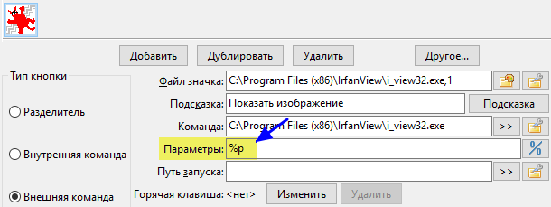

Переменные будут помогать нам в создании кнопок панели инструментов, настройке действий файловых ассоциаций и горячих клавиш.
В основном мы будем использовать их, когда необходимо передать команде в качестве параметра выделенный файл(ы), каталог, в котором мы находимся, и другие подобных вещи, связанные с содержимым файловых панелей.
Вот простой пример. Пользователь создал кнопку запуска IrfanView с переменной %p.

Когда пользователь нажмёт эту кнопку, он запустит IrfanView, а переменную %p Double Commander заменит выбранным в активной панели файлом.
Вот что понимается под переменными, описанными на этой странице.
Как вы увидите далее, большинство из них начинаются со знака процента %.
Примечание: Переменные и суффиксы регистрозависимые!
Это основные переменные, которые могут использоваться и которые связаны с текущим выбором.
По умолчанию значения переменных, содержащие пробелы и/или специальные символы автоматически экранируются: значение будет взято в двойные кавычки (в Windows) или такие символы будут предваряться "\"(в Unix-подобных системах). Если вам не нужно такое поведение, смотрите секцию Использование кавычек.
В качестве примера для каждой переменной мы используем файл C:\Users\UserName\Desktop\comment.png.
| Основные переменные | |
|---|---|
| Переменная | Что обозначает |
%p |
Полное имя файла, путь + имя файлаПример: %p = "C:\Users\UserName\Desktop\comment.png" |
%f |
Только имя файла, включая расширениеПример: %f = "comment.png" |
%d |
Только путь, без разделителя каталогов в концеПример: %d = "C:\Users\UserName\Desktop" |
%z |
Последняя папка в путиПример: %z = "Desktop" |
%o |
Имя файла без расширенияПример: %o = "comment" |
%e |
Расширение без точкиПример: %e = "png" |
%v |
Имя файла с относительным к текущему каталогу путём. Это сработает, если, например, вы вызвали внутреннюю команду cm_FlatView. Если мы включили вид без подкаталогов в каталоге "C:\Users\UserName", то %v будет равно "Desktop\comment.png" |
Для виртуальной файловой системы (открытый архив или плагин файловой системы) доступна переменная %a: строка включает в себя путь к виртуальной файловой системе (полное имя архива или имя WFX-плагина с "wfx://") и полное имя файла относительно корня виртуальной файловой системы.
Если выделено несколько файлов, эти переменные вернут значения для всех выделенных файлов в одну строку. Чтобы в любом случае получить значение только для файла под курсором, мы можем использовать нумерованный суффикс 0.
К упомянутым выше переменным из одной буквы мы можем добавить ещё одну букву, что позволит уточнить значение используемой переменной.
Для каждого примера предполагаем следующее:
В левой панели курсор стоит на файле "C:\LeftFolder\File.lft"
В правой панели – на "C:\RightFolder\File.rgh"
Активна правая панель.
| Основные суффиксы | |
|---|---|
| Суффикс | Что обозначает |
s |
Исходная или активная панель (независимо от того, левая или правая)Пример: %ps = "C:\RightFolder\File.rgh" |
t |
Целевая или неактивная панель (независимо от того, левая или правая)Пример: %pt = "C:\LeftFolder\File.lft" |
l |
Левая панельПример: %pl = "C:\LeftFolder\File.lft" |
r |
Правая панельПример: %pr = "C:\RightFolder\File.rgh" |
|
p |
Обе панели, сначала активная, затем пробел и далее неактивнаяПример: %pp = "C:\RightFolder\File.rgh" "C:\LeftFolder\File.lft" |
b |
Обе панели, сначала левая, затем пробел и далее праваяПример: %pb = "C:\LeftFolder\File.lft" "C:\RightFolder\File.rgh" |
Если у нас много выделенных файлов, мы можем добавить суффикс к ранее упомянутым переменным, чтобы уточнить, какой из них хотим использовать.
Для каждой строки таблицы предполагаем, что в активной панели открыт каталог "C:\temp\" и мы выделили двадцать шесть файлов с именем "FileA.txt", "FileB.txt" и т.д. до "FileZ.txt".
| Нумерованный суффикс | |
|---|---|
| Суффикс | Что обозначает |
0 |
Файл под курсоромПример: %ps0 = "C:\temp\FileY.txt" |
1 |
Первый выделенный файлПример: %ps1 = "C:\temp\FileA.txt" |
2 |
Второй выделенный файлПример: %ps2 = "C:\temp\FileB.txt" |
3 |
Третий выделенный файлПример: %ps3 = "C:\temp\FileC.txt" |
21 |
Двадцать первый выделенный файлПример: %ps21 = "C:\temp\FileU.txt" |
Иногда в передаваемых исполняемому файлу параметрах необходимо что-то добавить перед именами файлов.
В некоторых случаях нужно добавить что-то до и сразу после имён файлов.
Обратите внимание, что описанное далее будет применяться к каждому выделенному файлу.
Для каждой строки таблицы предполагаем, что в активной панели открыт каталог "C:\Windows\Fonts" и мы выделили три файла с именами "courrier.ttf", "fixedsys.ttf" и "terminal.ttf".
| Префикс и постфикс | |
|---|---|
| Префикс и постфикс | Что обозначает |
{} |
Один набор фигурных скобок добавляет текст в фигурных скобках перед каждым выделенным файломПример: %fs{+} = "+courrier.ttf" "+fixedsys.ttf" "+terminal.ttf" |
{}{} |
Два набора фигурных скобок добавят текст в фигурных скобках соответственно до и после каждого выделенного файлаПример: %fs{[}{]} = "[courrier.ttf]" "[fixedsys.ttf]" "[terminal.ttf]" |
Ранее мы разбирали переменные, связанные с выделенными файлами и папками.
Но мы также можем использовать переменную %D для выбора каталога конкретной панели.
Для выбора панели к этой переменной мы можем добавить букву из упомянутых выше основных суффиксов.
Для каждого примера предполагаем следующее:
В левой панели открыт каталог "C:\Reference"
В правой панели – "E:\Work"
Активна правая панель.
| Путь панели | |
|---|---|
| Переменная | Что обозначает |
%D |
Одна, без суффикса, вернёт путь активной панелиПример: "E:\Work" |
%Ds |
Каталог исходной или активной панели (независимо от того, левая или правая)Пример: "E:\Work" |
%Dt |
Каталог целевой или неактивной панели (независимо от того, левая или правая)Пример: "C:\Reference" |
%Dl |
Каталог левой панелиПример: "C:\Reference" |
%Dr |
Каталог правой панелиПример: "E:\Work" |
%Z |
Одна, без суффикса, вернёт имя последней папки в пути активной панелиПример: "Work" |
%Zs |
Имя последней папки в пути активной панели (независимо от того, левая или правая)Пример: "Work" |
%Zt |
Имя последней папки в пути неактивной панели (независимо от того, левая или правая)Пример: "Reference" |
%Zl |
Имя последней папки в пути левой панелиПример: "Reference" |
%Zr |
Имя последней папки в пути правой панелиПример: "Work" |
Для виртуальной файловой системы (открытый архив или плагин файловой системы) доступна переменная %A: полное имя архива или имя WFX-плагина с "wfx://".
Как вы видели ранее, DC возвращает результат, автоматически расставляя двойные кавычки.
Это было полезно, если в имени файла были пробелы и мы хотели передать его в качестве параметра, и чтобы все это работало.
Но по мере добавления новых переменных стало очевидно, что нам нужен способ получить результат без кавычек. Типичный пример: мы хотим в командной строке объединить исходное имя файла, но только имя файла без расширения, с новым расширением.
Вместо добавления новых переменных, которые возвращали бы то же самое, но без кавычек, мы можем использовать те же переменные, однако необходимо добавить в строке параметров %"0, чтобы заставить DC до конца строки не расставлять кавычки автоматически.
У нас есть:
%"0 : начиная с этой позиции не брать имена файлов в кавычки%"1 : начиная с этой позиции автоматически брать имена в кавычки%" : восстановить значение по умолчанию (автоматически расставлять кавычки)Таблица ниже показывает примеры использования для файла с именем "Client List.mdb":
| Примеры использования кавычек | |
|---|---|
| Выражение | Результат |
%o.zip |
"Client List".zip |
%"0%o.zip |
Client List.zip |
%"0"%o.zip" |
"Client List.zip" |
%"0"%o.zip" %"1%f |
"Client List.zip" "Client List.mdb" |
Как вы видели ранее, DC возвращает путь без разделителя каталогов в конце.
Такое поведение также может быть изменено с помощью переменной.
У нас есть:
%/0 : путь будет возвращён без разделителя каталогов в конце%/1 : путь будет возвращён с разделителем каталогов в конце%/ : восстановление значения по умолчанию (без разделителя каталогов в конце)Следующая таблица показывает примеры использования для каталога "C:\Users\UserName\Desktop":
| Разделитель каталогов в конце пути | |
|---|---|
| Выражение | Результат |
%D |
"C:\Users\UserName\Desktop" |
%/0%D |
"C:\Users\UserName\Desktop" |
%/1%D |
"C:\Users\UserName\Desktop\" |
%/%D |
"C:\Users\UserName\Desktop" |
Некоторые приложения в качестве параметра могут принимать текстовый файл со списком имён файлов.
Double Commander предлагает нам переменные, которые создадут временный текстовый файл (в системном каталоге для временных файлов) со списком выделенных файлов и папок.
| Список файлов | |
|---|---|
| Выражение | Описание |
%L |
Файл со списком полных имён выделенных файлов (путь + имя файла) |
%F |
Файл со списком только имён выделенных файлов, без пути |
%R |
Файл со списком имён выделенных файлов с относительным путём |
Double Commander будет использовать системную кодировку ANSI в Windows или системную кодировку по умолчанию в Unix-подобных системах (в дистрибутивах GNU/Linux это обычно UTF-8).
При закрытии Double Commander удаляет все такие временные файлы.
По умолчанию имена файлов в списке не берутся в кавычки, но если это необходимо, они могут быть добавлены.
Кроме того, есть возможность выбрать для списка файлов кодировку UTF-8 или UTF-16 LE.
| Суффиксы для списка файлов | |
|---|---|
| Выражение | Описание |
Q |
Имена файлов в списке будут заключены в кавычки |
U |
Список в кодировке UTF-8 |
W |
Список в кодировке UTF-16 LE |
Вы также можете добавить ещё один суффикс, чтобы указать панель для получения списка файлов.
Возможные примеры:
| Комбинирование суффиксов для списка файлов | |
|---|---|
| Выражение | Описание |
%LQt |
Полные имена выделенных в целевой (неактивной) панели файлов, заключённые в кавычки |
%FUs |
Только имена выделенных в активной панели файлов, список в кодировке UTF-8 |
%RQW |
Имена файлов активной панели (по умолчанию) с относительным путём, в кавычках, список в кодировке UTF-16 LE |
В параметрах вы можете указать, что команду необходимо выполнить в терминале.
Для этого используется переменная %t.
| Запуск в терминале | |
|---|---|
| Выражение | Описание |
%t0 |
Запустить в терминале и закрыть его после завершения |
%t1 |
Запустить в терминале и оставить его открытым |
Существуют две переменные: одна показывает окно сообщения, вторая – окно запроса со значением по умолчанию, которое позволяет изменить параметр на лету.
| Взаимодействие | |
|---|---|
| Выражение | Описание |
%[сообщение] |
Будет показано обычное окно сообщения с текстом между квадратными скобками |
%[запрос;значение] |
Будет показано окно запроса ввода параметра с его значением по умолчанию |
Пример взаимодействия:
| Пример взаимодействия | |
|---|---|
| Выражение | Описание |
%[Убедитесь, что ThisFile.ext закрыт!] |
Перед выполнением действия будет показано окно с сообщением "Убедитесь, что ThisFile.ext закрыт!". |
%[Введите значение ШИРИНЫ для преобразования изображения;1024] |
Перед выполнением действия будет показано окно с текстом "Введите значение ШИРИНЫ для преобразования изображения", в поле ввода будет вставлено значение по умолчанию, 1024. Введённое пользователем значение будет подставлено в то место строки, где добавлено выражение "%[запрос;значение]". |
В этом заключительном разделе перечислены переменные, которые ещё не были представлены.
| Прочие переменные | |
|---|---|
| Выражение | Описание |
%% |
Будет заменено на один символ процента % |
%# |
С этой позиции и до конца строки вместо % указателем переменной будет символ # |
#% |
Отмена предыдущего поведения: отсюда и до конца строки указателем переменной будет знак % |
%? |
До выполнения будет показана вся командная строка, с развёрнутыми значениями переменных. |
%% обычно используется, если вам необходимо использовать символ % как есть: это не позволит Double Commander попытаться прочитать этот и последующие символы как переменную.
Переменная %? особенно полезна в процессе создания кнопки панели инструментов, позволяя убедиться, что все переменные возвращают ожидаемое значение и строка запуска с командой и всеми параметрами получается правильной.
Более того, вы можете что-то изменить в этом окне, непосредственно до запуска команды.
Это особенно полезно, если вы не уверены в параметрах, передаваемых приложению.
Иногда комбинация знака процента и буквы переменной может совпасть с системной переменной.
Например, если вы введёте %os%ot, ожидая объединения имён файлов в активной и неактивной панелях, вы будете удивлены, обнаружив, что это может не работать под Windows, т.к. %os% – системная переменная, в значении которой название операционной системы.
Таким образом, здесь полезно использовать %#: в данном случае вы можете ввести %##os#ot.
%# указывает DC, что с этого момента символ # эквивалентен символу процента, таким образом можно избежать пересечения с возможными системными переменными.
Это редко необходимо, но если потребуется, вы будете рады узнать, что способ обойти существует!
Далее, если потребуется, #% вернёт символу % обычное значение.
В этом разделе нет ничего нового, однако для удобства все переменные сведены в одну таблицу.
| Сводная таблица | |
|---|---|
| Выражение | Описание |
%p | полное, включая путь, имя файла |
%f | имя файла, с расширением |
%d | путь |
%z | последняя папка в пути |
%o | имя файла без расширения |
%e | расширение файла без точки |
%v | имя файла с путём, относительным к каталогу активной панели |
s | суффикс для исходной (активной) панели (пример: %ps) |
t | суффикс для целевой (неактивной) панели (пример: %pt) |
l | суффикс для левой панели (пример: %pl) |
r | суффикс для правой панели (пример: %pr) |
p | суффикс для обеих панелей, активная первая, неактивная вторая (пример: %pp) |
b | суффикс для обеих панелей, левая первая, правая вторая (пример: %pb) |
0 | файл под курсором (пример: %ps0 |
1 | первый выделенный файл (пример: %ps1) |
2 | второй выделенный файл, если есть (пример: %ps2) |
3 | третий выделенный файл, если есть (пример: %ps3) |
21 | двадцать первый выделенный файл, если есть (пример: %ps21) |
{префикс} | префикс, добавляемый перед именем файла (пример: %f{+}) |
{префикс}{суффикс} | префикс и суффикс, добавляемые перед и после имени файла (пример: %f{[}{]}) |
%D | по умолчанию путь активной (исходной) панели |
%Ds | путь активной (исходной) панели |
%Dt | путь неактивной (целевой) панели |
%Dl | путь левой панели, независимо от того, какая активна |
%Dr | путь правой панели, независимо от того, какая активна |
%Z | по умолчанию имя последней папки в пути активной (исходной) панели |
%Zs | имя последней папки в пути активной (исходной) панели |
%Zt | имя последней папки в пути неактивной (целевой) панели |
%Zl | имя последней папки в пути левой панели, независимо от того, какая активна |
%Zr | имя последней папки в пути правой панели, независимо от того, какая активна |
%"0 | с этого места не расставлять кавычки автоматически |
%"1 | с этого места автоматически расставлять кавычки |
%" | восстанавливает поведение по умолчанию (автоматически расставлять кавычки) |
%/0 | путь без разделителя каталогов в конце (по умолчанию) |
%/1 | путь с разделителем каталогов в конце |
%/ | восстанавливает поведение по умолчанию (без разделителя каталогов в конце) |
%L | файл со списком выделенных файлов с полными именами (путь + имя файла) |
%F | файл со списком только имён выделенных файлов |
%R | файл со списком выделенных файлов с относительным путём |
Q | суффикс для %L, %F или %R: взять имена файлов в кавычки |
U | суффикс для %L, %F или %R: список в кодировке UTF-8 |
W | суффикс для %L, %F или %R: список в кодировке UTF-16 LE |
%t0 | запустить в терминале и закрыть его после завершения |
%t1 | запустить в терминале и оставить его открытым |
%[сообщение] | показать окно сообщения с текстом из квадратных скобок |
%[запрос;значение] | показать окно запроса ввода параметра с его значением по умолчанию |
%% | будет заменено на символ % |
%# | с этой позиции символ # будет обрабатываться как символ % |
#% | отмена предыдущего поведения, символ % будет обрабатываться как префикс переменной |
%? | показать командную строку перед выполнением |
Мы можем использовать переменные окружения в настройках Double Commander: в именах исполняемых файлов и значков на панели инструментов, именах плагинов, в избранных каталогах и т.д. Это удобный способ указать путь, если мы не хотим использовать абсолютные пути.
Double Commander поддерживает системные переменные окружения и предоставляет несколько собственных переменных окружения:
| Переменные окружения | |
|---|---|
| Переменная | Описание |
%COMMANDER_EXE% |
Полное имя (путь + имя файла) исполняемого файла Double Commander (символьная ссылка будет заменена на реальный файл) |
%COMMANDER_PATH% |
Каталог, в котором расположен исполняемый файл Double Commander |
%COMMANDER_DRIVE% |
Диск, на котором расположена папка Double Commander: - Windows: буква диска (с двоеточием); - Unix-подобные системы: точка монтирования. |
%COMMANDER_INI% |
Полное имя (путь + имя файла) основного файла конфигурации (doublecmd.xml) |
%COMMANDER_INI_PATH% |
Каталог, в котором расположены файлы конфигурации Double Commander. |
%DC_CONFIG_PATH% |
Каталог, в котором расположены файлы конфигурации Double Commander. |
Имена переменных %COMMANDER_PATH% и %DC_CONFIG_PATH% не чувствительны к регистру и мы можем использовать символ процента % независимо от семейства операционной системы (для обратной совместимости, это удобно для кроссплатформенного приложения). Тем не менее, в Unix-подобных системах имена переменных окружения регистрозависимы и для них традиционно используется верхний регистр, поэтому использование традиционного написания может быть хорошей привычкой.
В Windows дополнительно мы можем использовать псевдопеременные окружения в формате %$Имя%, которые соответствуют стандартным системным папкам Windows (для получения значений Double Commander использует функции SHGetSpecialFolderPath и SHGetKnownFolderPath из Windows API). Это не обычные переменные окружения и они недоступны для дочерних процессов (приложений, запущенных из Double Commander), но в остальном мы можем использовать их аналогично переменным окружения. Все эти переменные собраны в меню помощника выбора пути: справа от кнопок выбора файла или каталога находится кнопка Некоторые функции для выбора подходящего пути  , описание смотрите здесь.
, описание смотрите здесь.
Все эти переменные добавлены в меню избранных каталогов (подменю Специальные каталоги).
Originally created by Rustem (dok_rust@bk.ru)